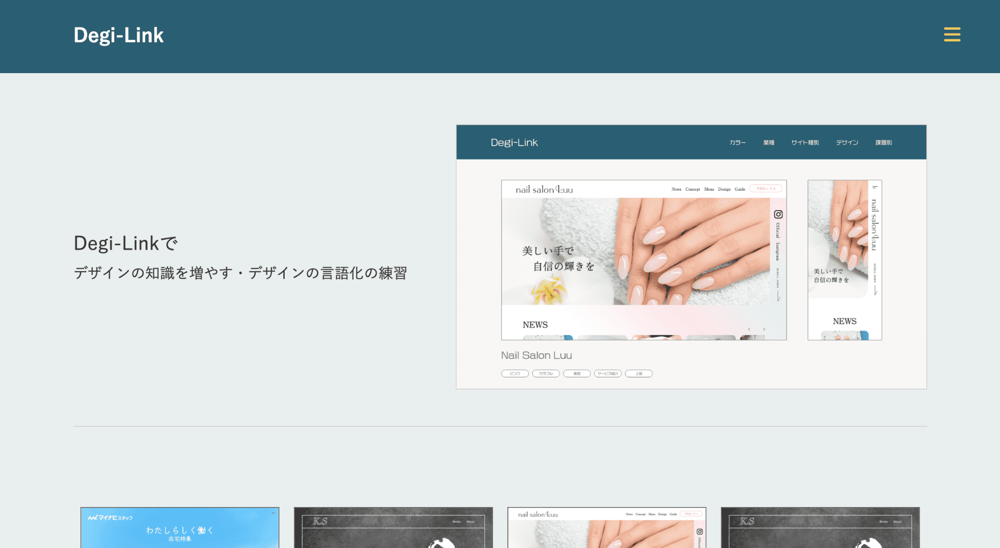
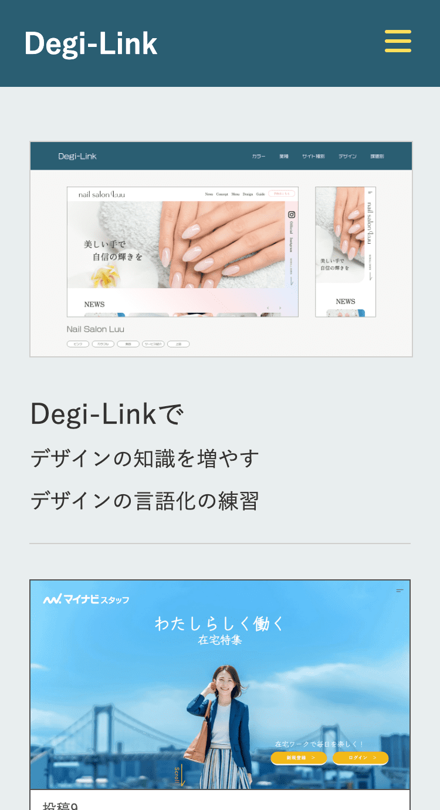
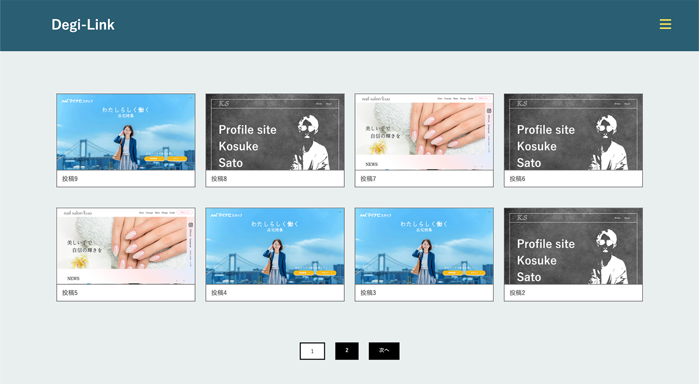
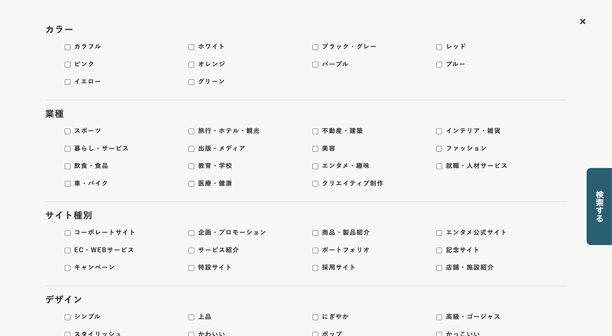
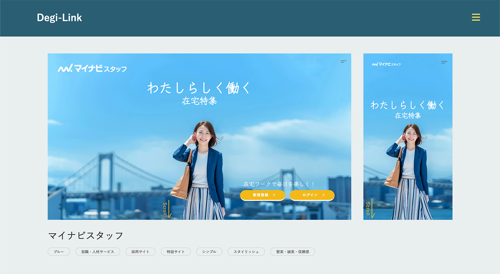
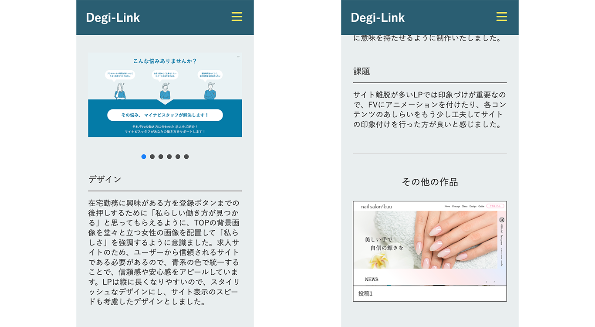

Works
Degi-Link
サイトを見る
ユーザー：test
パスワード：link2002


デジタルハリウッドの学生向けに専用のギャラリーサイトを制作いたしました。このサイトでは、デジハリ生徒が自分の作品を気軽に投稿し、他の生徒の作品を鑑賞して参考にできるようにしました。WordPressの制作は初めてでしたが、特定の課題に焦点を当てて取り組みました。
使用ツール
WordPress
Adobe XD
Adobe Dreamweaver




デザイン
サイトの構造はシンプルに保ち、WordPress未経験者でも比較的容易に操作できるように心がけ、本プロジェクトでは投稿機能と絞り込み検索機能のみを実装しました。各個別ページでは、作品のジャンルが一目で分かるようにカテゴリーが表示されています。作品を閲覧した後に終了感を与えないように、関連するカテゴリーの作品も表示し、ユーザーが簡単に次の作品に進むことができるようにしました。
頑張った点
デジハリの学生が自分の興味に合ったサイトを迅速に発見できるよう、絞り込み機能を導入しました。色、業種、デザインなど、さまざまなジャンルに分け、ユーザーが手軽に検索できるようにチェックボックスを採用しました。これにより、ユーザーがサイトを快適に探索し、理想的な作品を見つけることができるように工夫しました。
課題
現状は、ユーザーが管理画面から作品を投稿する仕組みですが、今後の展望としては、サイト上で容易に作品を投稿できる仕組みを導入したいと考えています。また、ユーザー同士がコミュニケーションを取れるようにコメント機能やログイン機能など、SNSのような機能を導入することで、デジハリの学生たちがより円滑に学び合える環境を提供していきたいと考えています。